第 10 讲：物理系统——从刚体到碰撞检测与求解
游戏物理引擎如何用近似与离散时间步模拟刚体运动、检测碰撞并求解约束
◆ 学完这一讲，你应该能
能说清物理世界与视觉世界分离的设计原因，以及静态、动态、运动学、触发器四类 Actor 的用途与区别
能解释常见碰撞形状（球、胶囊、盒、凸包、三角网格、高度场）的适用场景与限制
能写出显式、隐式、半隐式欧拉积分公式，并说明为什么半隐式欧拉是游戏物理的默认选择
能描述刚体角速度、转动惯量、角动量、力矩之间的关系，并解释台球碰撞中冲量的作用
能画出碰撞检测的两阶段流程（Broad Phase / Narrow Phase），并说出 BVH、Sort and Sweep、GJK、SAT 的核心思想
能说明碰撞求解的三种思路（罚力、速度约束、位置约束）以及顺序冲量法的基本流程
能列举场景查询（Raycast、Sweep、Overlap）的用途，并解释连续碰撞检测、休眠、岛、确定性模拟要解决的问题
核心结论速记
物理世界是视觉世界的简化近似，用简单形状包裹复杂模型，追求实时而非绝对精确。
Actor 分为静态、动态、运动学、触发器四类：动态受力和冲量影响，运动学由动画或脚本驱动但能推动动态物体，触发器只检测不阻挡。
形状选择要兼顾简单与贴合：球、胶囊、盒最常用，凸包用于复杂刚体，三角网格只能用于静态物体，高度场用于地形。
显式欧拉会发散，隐式欧拉会螺旋衰减，半隐式欧拉（先更新速度再更新位置）在游戏中最常用且稳定。
刚体转动需要角速度、转动惯量、角动量、力矩，转动惯量描述质量分布，力矩等于位置叉乘力。
碰撞检测分两阶段：Broad Phase 用 AABB 快速筛出可能重叠的物体对，Narrow Phase 用 GJK/SAT 等精确计算接触点和法线。
碰撞求解主流是速度约束加顺序冲量法，通过迭代施加冲量消除穿透方向的速度。
工程上还要处理休眠、岛、连续碰撞检测（TOI）和确定性模拟，以兼顾性能与正确性。
01物理系统在游戏里到底解决什么问题
物理系统是游戏引擎中最“反直觉”的模块之一：它模拟的是现实世界的规律，但目标却不是物理精确，而是看起来对、跑得快、可控。课件开篇用四张图概括了物理在游戏中的四类用途：
- 物理直觉（Physical Intuition）：让玩家凭生活经验就能预测物体行为，比如箱子被推会滑动、球会弹跳。
- 动态环境（Dynamic Environment）：场景中的物体可以被破坏、堆叠、推动，而不是一张静态背景图。
- 真实交互（Realistic Interaction）：角色与场景、载具与地面之间的互动要符合预期。
- 艺术表现（Artistic）：物理也可以被“夸张”或“削弱”，服务于演出效果，比如慢动作、夸张的爆炸。
这一讲的主线是：先建立物理世界与视觉世界分离的认知，再讲 Actor 与形状，然后讲运动积分、刚体动力学、碰撞检测、碰撞求解，最后讲场景查询与工程优化。
关键心态：物理引擎不是仿真软件，它是游戏循环里每帧都要跑完的一个子系统。所有算法选择都是“精度 vs 速度”的折中。
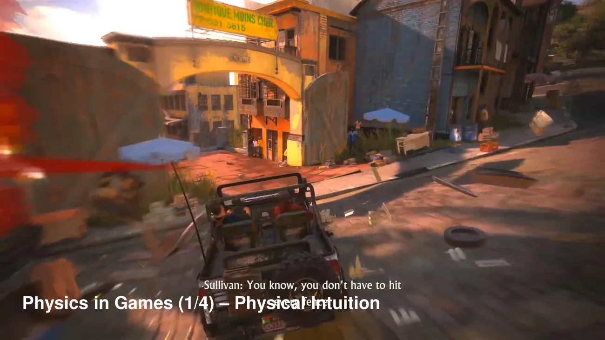
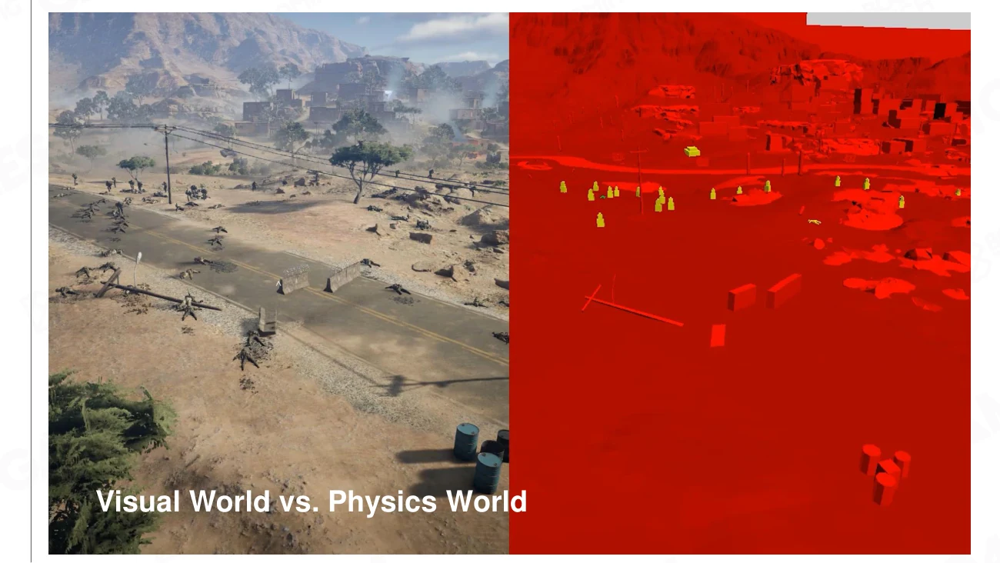
常见坑
把物理引擎当仿真软件 → 追求绝对精确导致性能崩溃 → 记住游戏物理是近似，形状和步长都可以妥协。
UE / Unity 落地
UE：物理由 Chaos 物理引擎驱动，项目设置里可调子步长（Substepping）和固定帧率。
Unity：物理由 PhysX 驱动（DOTS 下是 Unity Physics），Project Settings > Time > Fixed Timestep 控制物理步长。
02物理世界与视觉世界：Actor 与形状
游戏里你看到的模型（视觉世界）和物理引擎计算的对象（物理世界）是两套数据。物理世界只关心简化后的碰撞形状和运动状态，渲染世界关心顶点、材质、骨骼。两者通过同步机制关联：物理算完位置后，把变换写回渲染对象。
物理世界的基本单位叫 Actor（物理 actor），每个 Actor 至少包含：
- 一个或多个形状（Shape），定义碰撞几何；
- 质量、密度、摩擦、弹性等材质属性；
- 位置、朝向、线速度、角速度等运动状态；
- 一个 Actor 类型，决定它受不受物理规律影响。
课件把 Actor 分为四类：
- 静态 Actor（Static）：不动，不受力，但参与碰撞。比如墙壁、地面。
- 动态 Actor（Dynamic）：受重力、力、冲量影响，可以移动和旋转。比如箱子、布娃娃。
- 运动学 Actor（Kinematic）：不受物理规律驱动，由动画或脚本直接设置位置/速度，但它能推动动态物体。课件特别提醒：运动学 Actor 是“麻烦制造者”，因为它不遵守物理规律却参与碰撞，容易产生穿透或抖动。
- 触发器（Trigger）：像静态 Actor 一样不移动，但不阻挡，只在其他 Actor 进入/离开时发出通知。常用于关卡触发、拾取物。
形状方面，课件按从简到繁列出：球（Sphere）、胶囊（Capsule）、盒（Box）、凸包（Convex Mesh）、三角网格（Triangle Mesh）、高度场（Height Field）。选择原则是：简单形状优先，因为碰撞检测和求解都更快；复杂形状只在必要时用。
重要限制：动态 Actor 不能用三角网格。三角网格没有“内部”，动态物体需要明确的体积和惯性，所以只能用凸包或基本形状。三角网格通常只给静态场景用。
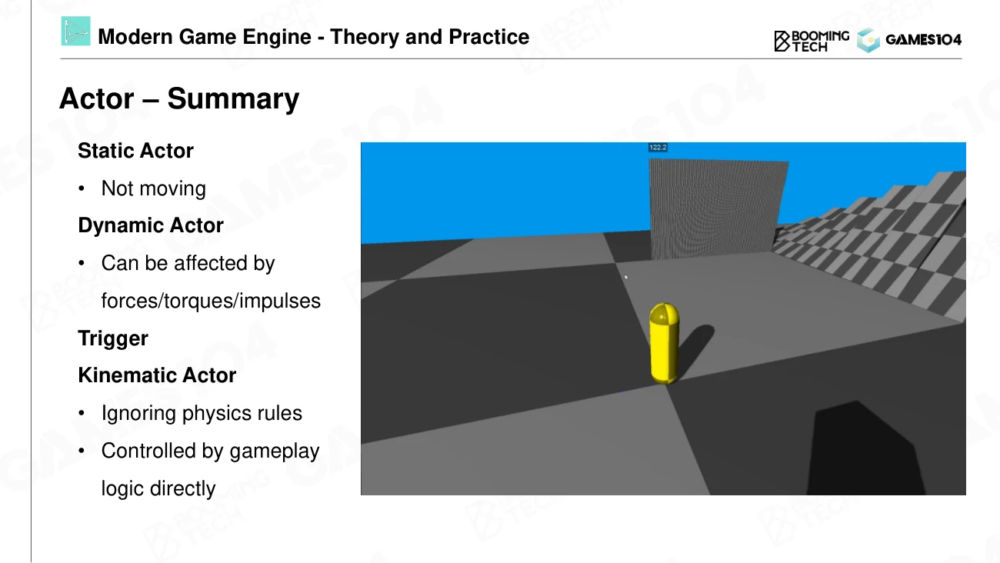
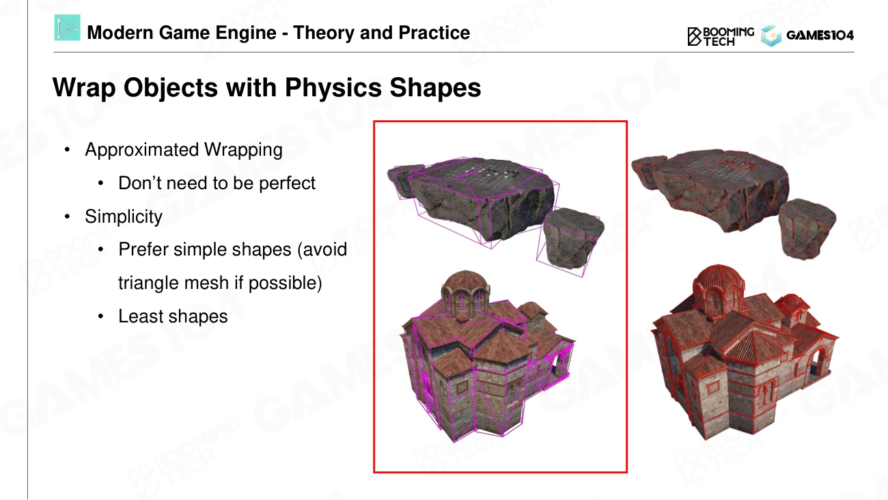
常见坑
动态物体用了三角网格 → 物理引擎报错或行为异常 → 改用凸包或基本形状组合。
运动学 Actor 直接瞬移 → 穿透动态物体或产生巨大冲量 → 用速度驱动或开启连续碰撞检测。
触发器忘了勾选“不阻挡” → 角色被 invisible wall 挡住 → 检查碰撞预设和响应设置。
UE / Unity 落地
UE：StaticMeshActor 的 Mobility 可设为 Static / Stationary / Movable；Trigger 用 Box Trigger 并设置 Collision Preset 为 Trigger。
Unity：Rigidbody 的 Body Type 有 Dynamic / Kinematic / Static；触发器勾选 Is Trigger。
03形状属性：质量、质心、摩擦与弹性
形状不只是几何，还带物理属性。课件重点讲了四个：
- 质量与密度（Mass and Density）：质量通常由密度乘以体积得到。密度让不同材质的物体有不同“手感”，比如木头和铁。
- 质心（Center of Mass）：质量分布的中心。质心位置决定物体如何倾倒。课件用 Gomboc 形状举例：质心低且底面稳的物体不容易翻倒。
- 摩擦（Friction）：两个表面之间的阻力，影响物体滑动和滚动。
- 弹性（Restitution）：碰撞后速度恢复的比例，0 表示完全非弹性（不弹），1 表示完全弹性。
这些属性通常成对出现：摩擦和弹性是两个材质之间的组合属性，引擎会用查表或公式（如摩擦取几何平均、弹性取最大值）来合成。
工程直觉：调物理手感时，先调质量和摩擦，再调弹性。弹性过高会让堆叠物体抖动不停。
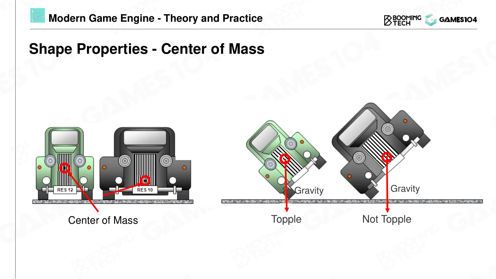
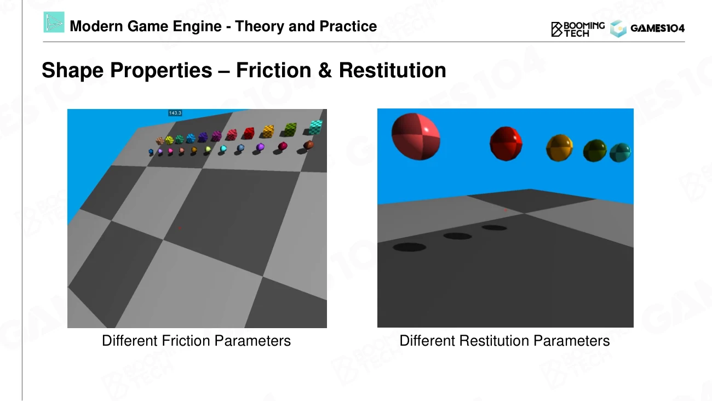
常见坑
所有物体都用默认密度 → 大箱子和小球质量一样，推起来手感怪 → 按材质设置密度。
弹性设为 1 → 物体永远弹跳不停止 → 游戏里通常用 0.1~0.6，并配合休眠。
UE / Unity 落地
UE：Physics Asset 里可设每根骨骼的 Physics Type、Mass、Linear/Angular Damping；物理材质（Physical Material）设 Friction 和 Restitution。
Unity：Rigidbody 的 Mass、Drag、Angular Drag；Physic Material 设 Dynamic Friction、Static Friction、Bounciness。
04力、冲量与运动积分：为什么半隐式欧拉是默认
物理引擎每帧要做的事可以概括为：根据受力更新速度，再根据速度更新位置。课件先讲牛顿定律：
- 第一定律：没有外力时速度不变，\( v_{t+\Delta t} = v_t \)，\( x_{t+\Delta t} = x_t + v_t \Delta t \)。
- 第二定律：\( F = m a \)，所以 \( a = F/m \)。
力（Force）是持续作用的，产生加速度；冲量（Impulse）是瞬间改变速度的，\( \Delta v = J/m \)。爆炸、碰撞反弹通常用冲量实现。
现实中的运动是连续的，但游戏里必须离散化：把时间切成固定步长 \( \Delta t \)，一步步积分。课件对比了三种欧拉方法：
- 显式（前向）欧拉：\( v_{t+\Delta t} = v_t + a_t \Delta t \)，\( x_{t+\Delta t} = x_t + v_t \Delta t \)。用当前速度更新位置。问题：对圆周运动，结果会发散爆炸。
- 隐式（后向）欧拉：用未来速度更新位置，\( v_{t+\Delta t} = v_t + M^{-1} F_{t+\Delta t} \Delta t \)，\( x_{t+\Delta t} = x_t + v_{t+\Delta t} \Delta t \)。稳定但会螺旋衰减，能量损失。
- 半隐式欧拉：先更新速度，再用新速度更新位置：\( v_{t+\Delta t} = v_t + a_t \Delta t \)，\( x_{t+\Delta t} = x_t + v_{t+\Delta t} \Delta t \)。步长小时能很好地近似圆周运动，稳定且简单，是游戏物理的默认选择。
记忆口诀：显式欧拉“用旧速度走”，会越走越远；隐式欧拉“用新速度走”，会越走越缩；半隐式欧拉“先换速度再走”，刚刚好。
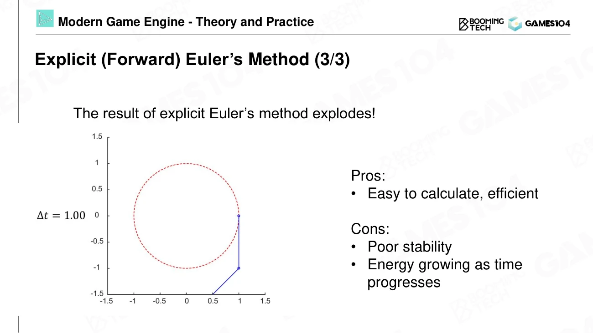
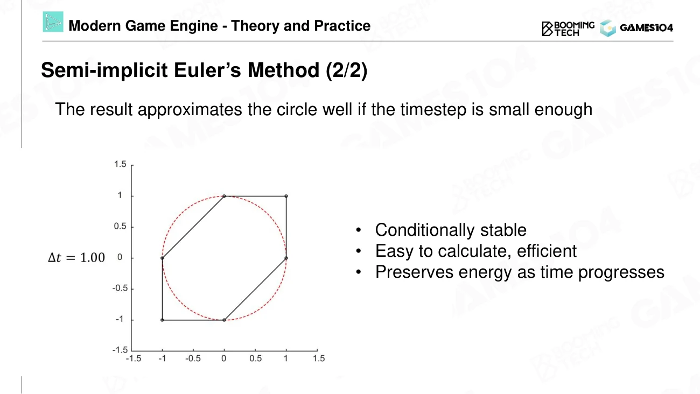
常见坑
步长太大 → 半隐式欧拉也会不稳定，物体抖动或穿透 → 减小固定步长或开启子步。
用帧时间直接当物理步长 → 帧率波动导致物理行为不一致 → 使用固定时间步（Fixed Timestep）。
UE / Unity 落地
UE：Project Settings > Physics > Substepping 可开启子步，并设置 Max Substep Delta Time。
Unity：Fixed Timestep 默认 0.02s，可在 Time 设置中调整；Rigidbody 的 Interpolate 可平滑渲染。
半隐式欧拉积分伪代码（cpp）
// 每个固定步长 dt
Vec3 acceleration = totalForce / mass;
velocity += acceleration * dt; // 先更新速度
position += velocity * dt; // 再用新速度更新位置
05刚体转动：角速度、转动惯量与力矩
刚体除了平动还有转动。课件用一组对应关系把线性量和角量并列：
| 线性量 | 角量 |
|---|---|
| 位置 \( x \) | 朝向 \( R \)（矩阵或四元数） |
| 线速度 \( v = \dot{x} \) | 角速度 \( \omega \) |
| 线加速度 \( a \) | 角加速度 \( \alpha = \dot{\omega} \) |
| 质量 \( m \) | 转动惯量 \( I \) |
| 动量 \( p = m v \) | 角动量 \( L = I \omega \) |
| 力 \( F \) | 力矩 \( \tau = r \times F \) |
几个关键点：
- 角速度 \( \omega \) 的方向是旋转轴，大小是旋转快慢。物体上一点的速度 \( v = \omega \times r \)。
- 转动惯量 \( I \) 描述质量分布，质量离轴越远，转动惯量越大，越难转动。它是张量，但在主轴坐标系下可对角化。
- 角动量 \( L = I \omega \)，没有外力矩时角动量守恒。
- 力矩 \( \tau = r \times F \)，是力使物体转动的效果。
课件用台球做例子：球杆给球一个冲量，冲量作用点偏离质心就会产生力矩，让球旋转。摩擦和压力冲量共同决定球的走位。
工程直觉：调刚体手感时，转动惯量比质量更影响“转起来轻不轻”。UE 的 Physics Asset 里可以调每根骨骼的 Angular Damping 和 Inertia Tensor Scale。
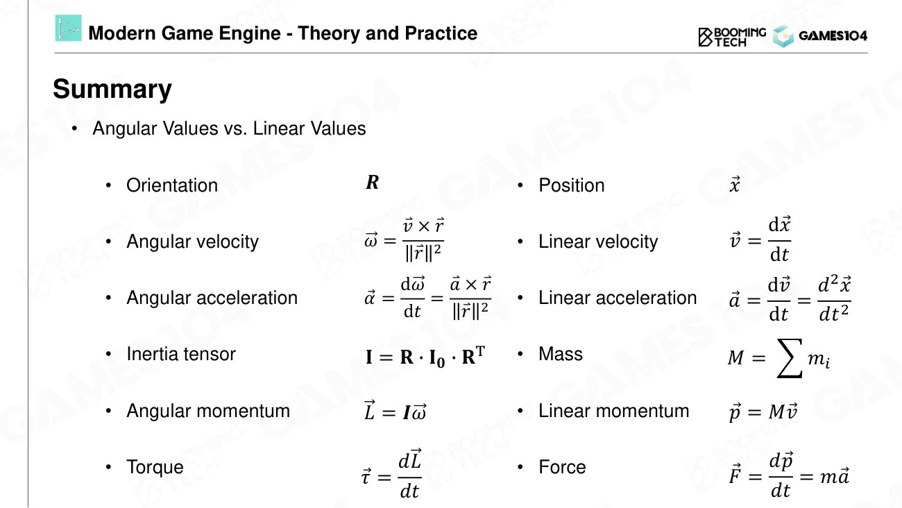
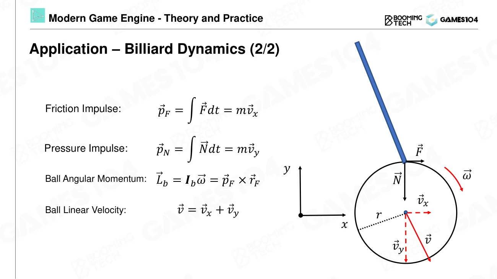
常见坑
转动惯量设得过大 → 物体转起来像灌了铅 → 检查 Inertia Tensor Scale 或质量分布。
角速度没有阻尼 → 物体永远旋转不停 → 设置 Angular Damping。
UE / Unity 落地
UE：Physics Asset 中每根 Body 可设 Angular Damping、Inertia Tensor Scale。
Unity：Rigidbody 的 Angular Drag 控制角速度衰减；AddTorque 施加力矩。
06碰撞检测：Broad Phase 与 Narrow Phase
碰撞检测分两个阶段，这是所有物理引擎的标准架构：
Broad Phase（粗筛）：快速找出可能重叠的物体对。它用 AABB（轴对齐包围盒）做粗略判断，目标是“不漏掉，但可以多报”。常见算法：
- BVH 树（Bounding Volume Hierarchy）：把场景组织成树，动态更新。课件提到动态 BVH 的三种构建方式：自顶向下、增量插入、自底向上。
- Sort and Sweep（排序扫描）：沿每个轴排序 AABB 边界，只检查相邻交换的物体。适合物体分布较均匀的场景。
Narrow Phase（精筛）：对粗筛出的物体对做精确相交测试，并生成接触信息：接触点、接触法线、穿透深度。课件列出三类方法：
- 基本形状相交测试：球-球、球-胶囊、胶囊-胶囊等，有解析公式，最快。
- Minkowski 差与 GJK 算法：把两个凸形状的碰撞转化为“原点是否在 Minkowski 差内”的问题。GJK 通过迭代找支撑点，判断是否分离。
- 分离轴定理（SAT）：对凸多面体，检查所有面法线和边叉乘方向，只要存在一个轴能分开两个形状，就不碰撞。
关键结论：Narrow Phase 不仅回答“碰没碰”，还要给出接触法线和穿透深度，求解器才能计算冲量。
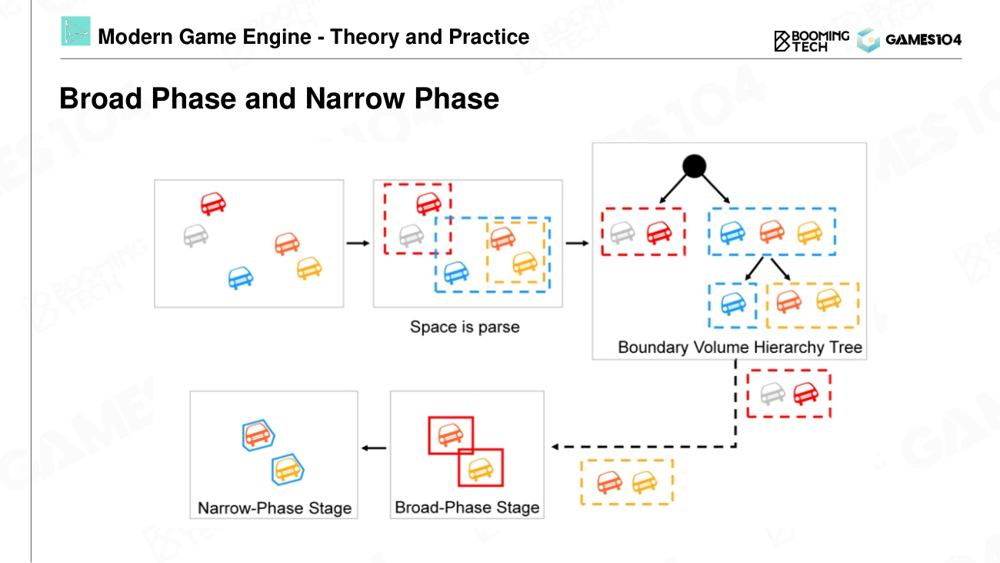
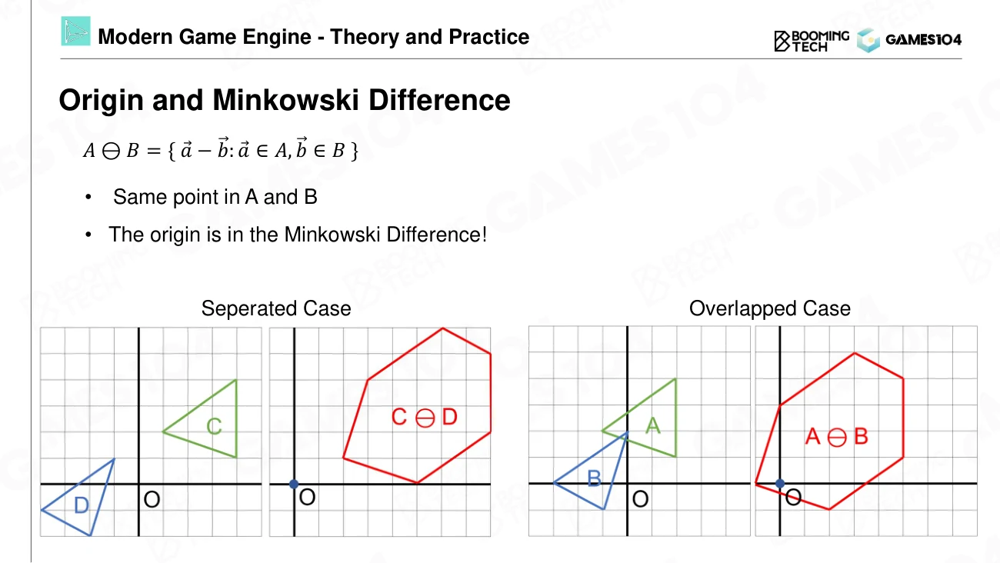
常见坑
Broad Phase 漏报 → 物体穿透但没检测到 → 检查 AABB 是否随物体正确更新。
Narrow Phase 法线方向反了 → 求解时把物体推得更深 → 检查法线是否从 A 指向 B。
UE / Unity 落地
UE：Chaos 物理的碰撞检测对用户透明，但可通过 Show Collision 查看简单碰撞形状。
Unity：Physics Debugger 可可视化 Broad Phase 和接触点。
07碰撞求解与场景查询：让物体分开并回答“打中了没”
检测到碰撞后，要求解，让物体不再穿透。课件列出三种思路：
- 罚力（Penalty Force）：按穿透深度施加一个弹簧力把物体推开。简单但需要很大的力和很小的步长，游戏里很少用。
- 速度约束（Velocity Constraints）：在速度层面施加冲量，消除沿法线方向的相对速度。主流方法是顺序冲量法（Sequential Impulses），迭代多次施加冲量，逐步逼近无穿透。
- 位置约束（Position Constraints）：直接修正位置，消除穿透。常与速度约束配合使用。
课件重点讲了速度约束：把碰撞建模为约束，用拉格朗日力学推导，最终得到冲量公式。顺序冲量法每次处理一个接触点，迭代若干次，适合实时。
场景查询（Scene Query） 是物理系统对外提供的“问答”接口：
- Raycast（射线检测）：从一点沿方向发射射线，返回最近命中。用于射击、拾取、视线检测。
- Sweep（扫掠）：用一个形状沿方向扫过，检测碰撞。用于角色移动、子弹。
- Overlap（重叠检测）：查询一个区域内所有重叠物体。用于爆炸范围、触发器。
碰撞分组（Collision Group） 决定谁和谁碰撞。课件举例：Player 属于 Pawn，障碍物属于 Static，可移动箱子属于 Movable，通过矩阵配置碰撞关系。
工程直觉：Raycast 要设置合理的距离和碰撞通道，否则会打到不该打的东西（比如自己的胶囊体）。
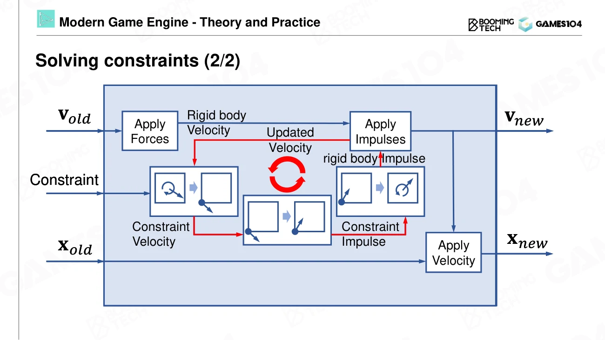
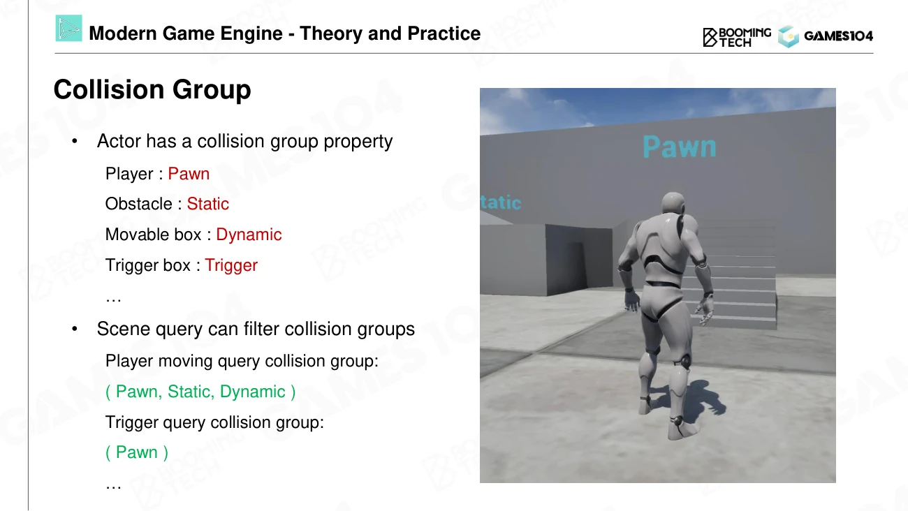
常见坑
Raycast 起点在角色胶囊体内 → 打中自己 → 使用忽略自身或调整起点。
顺序冲量迭代次数太少 → 堆叠物体下陷 → 增加迭代次数或子步。
UE / Unity 落地
UE：Line Trace By Channel / Sweep By Channel / Overlap 节点；碰撞预设（Collision Preset）配置通道和响应。
Unity：Physics.Raycast、Physics.SphereCast、Physics.OverlapSphere；Layer Collision Matrix 配置层碰撞。
08工程优化：休眠、岛、连续碰撞与确定性
物理系统很贵，工程上必须优化。课件讲了几个关键手段：
- 岛（Island）：把相互接触的物体分成一组，组与组之间独立求解，便于并行。
- 休眠（Sleeping）：长时间不动的物体停止模拟，节省 CPU。被其他物体撞到或受力时唤醒。
- 连续碰撞检测（CCD）：快速物体可能在一帧内穿过薄墙，这叫隧穿（Tunneling）。解决方案是 Time-of-Impact（TOI），通过保守推进估算碰撞时间，在碰撞前停下来。
- 确定性模拟（Deterministic Simulation）：同样的初始状态和输入，必须得到同样的结果。这对多人游戏、回放、帧同步至关重要。要求固定步长、固定迭代顺序、避免浮点不确定性。
注意：确定性在跨平台时很难保证，因为不同 CPU 的浮点运算可能有差异。很多游戏用定点数或锁步帧同步来规避。
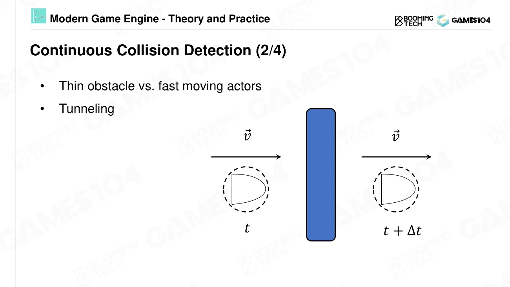
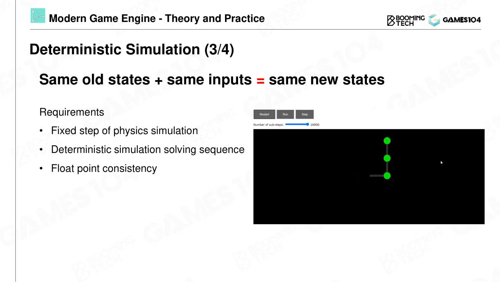
常见坑
快速子弹穿透薄墙 → 未开启 CCD → 开启 Continuous Collision Detection 或使用射线检测。
多人游戏物理不同步 → 浮点不确定性或步长不一致 → 使用固定步长和确定性物理库。
UE / Unity 落地
UE：Project Settings > Physics > Enable Continuous Collision Detection；Chaos 支持子步和休眠。
Unity：Rigidbody 的 Collision Detection 设为 Continuous 或 Continuous Dynamic；Physics Manager 可调 Sleep Threshold。
引擎对照表
| 概念 / 效果 | Unreal Engine | Unity |
|---|---|---|
物理 Actor 类型 | Mobility: Static / Stationary / Movable；Trigger 用 Collision Preset | Rigidbody Body Type: Dynamic / Kinematic / Static；Is Trigger |
碰撞形状 | Simple Collision（Box/Sphere/Capsule/Convex）与 Complex Collision（Triangle Mesh） | BoxCollider、SphereCollider、CapsuleCollider、MeshCollider（Convex 勾选） |
物理材质 | Physical Material 设 Friction、Restitution | Physic Material 设 Dynamic Friction、Bounciness |
场景查询 | Line Trace、Sweep、Overlap 节点 | Physics.Raycast、Physics.SphereCast、Physics.OverlapSphere |
连续碰撞检测 | Project Settings > Physics > Enable CCD | Rigidbody Collision Detection = Continuous |
固定步长 | Substepping 与 Max Substep Delta Time | Fixed Timestep（Time 设置） |
术语双语表
| English | 中文 | 说明 |
|---|---|---|
| Actor | 物理 actor | 物理世界中的基本对象，包含形状、质量和运动状态。 |
| Kinematic | 运动学 | 不受物理规律驱动、由脚本或动画设置位置的 actor。 |
| Trigger | 触发器 | 不阻挡但能检测进入/离开的碰撞体。 |
| Semi-implicit Euler | 半隐式欧拉 | 先更新速度再更新位置的积分方法，游戏物理常用。 |
| Moment of Inertia | 转动惯量 | 描述质量分布对旋转难易程度的量。 |
| Broad Phase | 粗筛阶段 | 用 AABB 快速找出可能碰撞的物体对。 |
| Narrow Phase | 精筛阶段 | 精确计算接触点、法线和穿透深度。 |
| GJK | GJK 算法 | 基于 Minkowski 差判断凸形状是否相交的迭代算法。 |
| SAT | 分离轴定理 | 若存在一个轴能分开两个凸形状，则它们不相交。 |
| CCD | 连续碰撞检测 | 防止快速物体隧穿的检测方式。 |
课后练习
01 显式欧拉、隐式欧拉、半隐式欧拉在模拟圆周运动时分别有什么表现？为什么游戏物理默认用半隐式欧拉？
查看答案
提示：
从能量角度想：显式欧拉能量增加，隐式欧拉能量减少。
显式欧拉用旧速度更新位置，结果会发散爆炸；隐式欧拉用新速度更新位置，结果会螺旋衰减；半隐式欧拉先更新速度再用新速度更新位置，步长较小时能很好地近似圆周运动，稳定且计算简单，因此是游戏物理的默认选择。
02 一个质量为 2kg 的球以 3m/s 撞墙，弹性系数为 0.5，求碰撞后法线方向速度大小。
查看答案
提示：
弹性系数 e 满足 v_out = -e * v_in。
碰撞后法线方向速度大小为 0.5 × 3 = 1.5 m/s，方向与入射方向相反。
03 为什么动态 Actor 不能使用三角网格作为碰撞形状？应该用什么替代？
查看答案
提示：
考虑体积和惯性。
三角网格没有明确的内部体积，无法计算质量和转动惯量，且碰撞检测复杂。动态物体应使用凸包（Convex Mesh）或基本形状（球、胶囊、盒）的组合。
04 简述 Broad Phase 和 Narrow Phase 的分工，并各举一个算法。
查看答案
提示：
粗筛求快，精筛求准。
Broad Phase 用 AABB 快速找出可能重叠的物体对，算法有 BVH、Sort and Sweep；Narrow Phase 对候选对做精确相交测试并生成接触信息，算法有基本形状解析测试、GJK、SAT。
05 在 UE 中如何防止快速子弹穿透薄墙？请说出至少两种方法。
查看答案
提示：
考虑连续碰撞检测和射线检测。
方法一：开启子弹的 Continuous Collision Detection（CCD）；方法二：用射线检测（Line Trace）代替物理模拟；方法三：增加物理子步或减小固定步长。